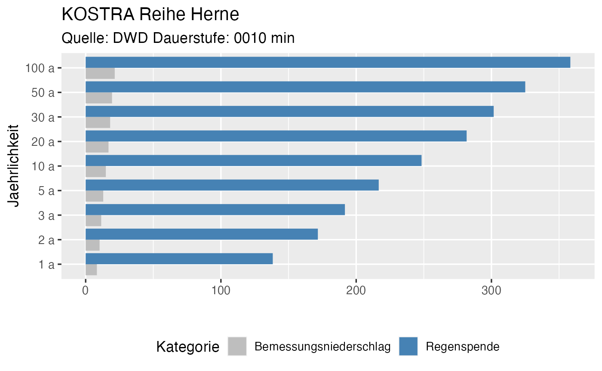
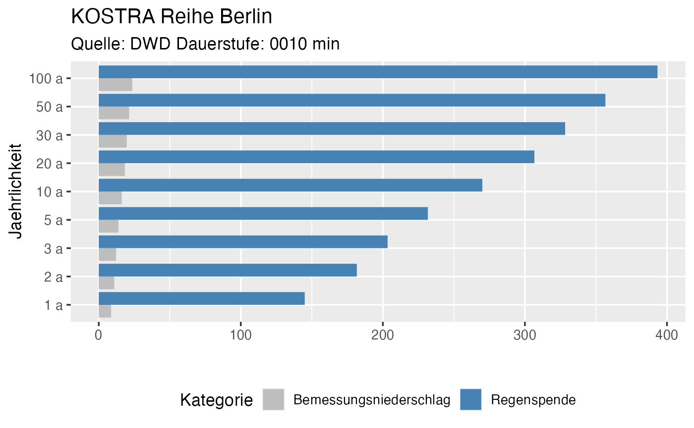

link_to_coord_help <- "https://epsg.io/transform#s_srs=4326&t_srs=3034"
# Example default values Herne
herne <- r2q::get_KOSTRA()
#> Reading layer `StatRR_KOSTRA-DWD-2010R_D0060' from data source `/Users/runner/work/_temp/Library/r2q/extdata/KOSTRA/GIS_KOSTRA-DWD-2010R_D0060' using driver `ESRI Shapefile'
#> Simple feature collection with 8453 features and 10 fields
#> Geometry type: POLYGON
#> Dimension: XY
#> Bounding box: xmin: 3710675 ymin: 2271848 xmax: 4354525 ymax: 3149248
#> Projected CRS: ETRS89_LCC_Europe
plotly::ggplotly(herne$plot)| Jaehrlichkeit | Kategorie | Wert |
|---|---|---|
| 1 a | Bemessungniederschlag [mm] | 15.90000 |
| 2 a | Bemessungniederschlag [mm] | 21.20000 |
| 3 a | Bemessungniederschlag [mm] | 24.40000 |
| 5 a | Bemessungniederschlag [mm] | 28.30000 |
| 10 a | Bemessungniederschlag [mm] | 33.60000 |
| 20 a | Bemessungniederschlag [mm] | 39.00000 |
| 30 a | Bemessungniederschlag [mm] | 42.10000 |
| 50 a | Bemessungniederschlag [mm] | 46.10000 |
| 100 a | Bemessungniederschlag [mm] | 51.40000 |
| 1 a | Regenspende [ l/(s*ha) ] | 44.16667 |
| 2 a | Regenspende [ l/(s*ha) ] | 58.88889 |
| 3 a | Regenspende [ l/(s*ha) ] | 67.77778 |
| 5 a | Regenspende [ l/(s*ha) ] | 78.61111 |
| 10 a | Regenspende [ l/(s*ha) ] | 93.33333 |
| 20 a | Regenspende [ l/(s*ha) ] | 108.33333 |
| 30 a | Regenspende [ l/(s*ha) ] | 116.94444 |
| 50 a | Regenspende [ l/(s*ha) ] | 128.05556 |
| 100 a | Regenspende [ l/(s*ha) ] | 142.77778 |
# Example 10 min for Berlin
berlin <- r2q::get_KOSTRA(coord_vector = c(4217676.98, 2862423.69),
duration_string = "0010",
location_name = "Berlin",
plot = TRUE)
#> Reading layer `StatRR_KOSTRA-DWD-2010R_D0010' from data source `/Users/runner/work/_temp/Library/r2q/extdata/KOSTRA/GIS_KOSTRA-DWD-2010R_D0010' using driver `ESRI Shapefile'
#> Simple feature collection with 8453 features and 10 fields
#> Geometry type: POLYGON
#> Dimension: XY
#> Bounding box: xmin: 3710675 ymin: 2271848 xmax: 4354525 ymax: 3149248
#> Projected CRS: ETRS89_LCC_Europe
plotly::ggplotly(berlin$plot)| Jaehrlichkeit | Kategorie | Wert |
|---|---|---|
| 1 a | Bemessungniederschlag [mm] | 8.7000 |
| 2 a | Bemessungniederschlag [mm] | 10.9000 |
| 3 a | Bemessungniederschlag [mm] | 12.2000 |
| 5 a | Bemessungniederschlag [mm] | 13.9000 |
| 10 a | Bemessungniederschlag [mm] | 16.2000 |
| 20 a | Bemessungniederschlag [mm] | 18.4000 |
| 30 a | Bemessungniederschlag [mm] | 19.7000 |
| 50 a | Bemessungniederschlag [mm] | 21.4000 |
| 100 a | Bemessungniederschlag [mm] | 23.6000 |
| 1 a | Regenspende [ l/(s*ha) ] | 145.0000 |
| 2 a | Regenspende [ l/(s*ha) ] | 181.6667 |
| 3 a | Regenspende [ l/(s*ha) ] | 203.3333 |
| 5 a | Regenspende [ l/(s*ha) ] | 231.6667 |
| 10 a | Regenspende [ l/(s*ha) ] | 270.0000 |
| 20 a | Regenspende [ l/(s*ha) ] | 306.6667 |
| 30 a | Regenspende [ l/(s*ha) ] | 328.3333 |
| 50 a | Regenspende [ l/(s*ha) ] | 356.6667 |
| 100 a | Regenspende [ l/(s*ha) ] | 393.3333 |